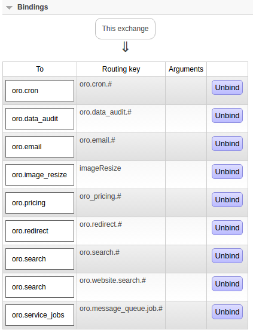
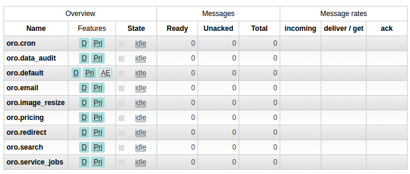
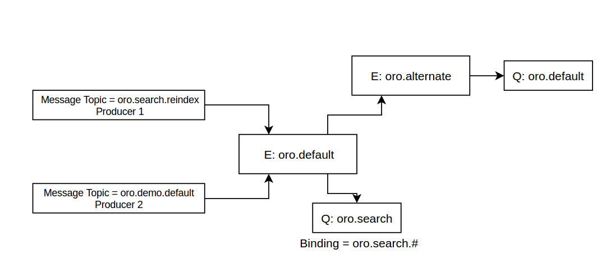
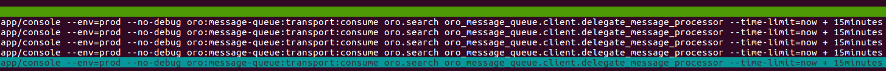

Note
RabbitMQ, and messaging in general, uses some jargon:
- Producer is an application that sends messages.
- Queue is a buffer that stores messages.
- Consumer is an application that receives messages.
- Exchange is a component that receives messages from producers and pushes them to queues. Available exchange types are: direct, topic, headers and fanout.
- Bindings is a routing between the exchange and the queue. Whenever the queue has to get the messages from this exchange, they should be bound.
In AmqpMessageQueueBundle, by default, the producer send messages to the oro.default exchange of the fanout type and pushes them to the oro.default queue. Every message contains a routing key – the topic_name of the message processor. Read more about message processors and topics.
To configure RabbitMQ exchanges and queues, create a simple bash script for queue declaration and binding:
#!/bin/bash
# function for declaring queue and bind it to exchange
function declareQueue {
queue_name=$1
queue_route_key=$2
source=$3
python ./rabbitmqadmin declare queue --vhost=$HOST --user=$USER --password=$PASSWORD --vhost=$VHOST name=$queue_name durable=true arguments='{"x-max-priority": 4}'
python ./rabbitmqadmin declare binding --vhost=$HOST --user=$USER --password=$PASSWORD --vhost=$VHOST source=$source destination=$queue_name destination_type=queue routing_key=$queue_route_key
}
# configuration
HOST="197.0.13.17"
VHOST="/"
USER="guest"
PASSWORD="guest"
DEFAULT_EXCHANGE='oro.default'
# download rabbitmq admin script from server_host
wget "http://server_host:15672/cli/rabbitmqadmin"
# delete if exist "oro.default" exchange and redeclare it with type "topic"
python ./rabbitmqadmin delete exchange --vhost=$HOST --user=$USER --password=$PASSWORD --vhost=$VHOST name="oro.default"
python ./rabbitmqadmin declare exchange --vhost=$HOST --user=$USER --password=$PASSWORD --vhost=$VHOST name="oro.default" type="topic" durable=true
# declare "oro.alternate" exchange with type "fanout"
python ./rabbitmqadmin declare exchange --vhost=$HOST --user=$USER --password=$PASSWORD --vhost=$VHOST name="oro.alternate" type="fanout" durable=true
# declare "oro.default" queue if it does not exist and bind it to "oro.alternate" exchange
declareQueue "oro.default" "" "oro.alternate"
# set policy to "oro.default" exchange to use "oro.alternate" exchange as a alternate exchange
rabbitmqctl set_policy AE "^oro.default$" '{"alternate-exchange":"oro.alternate"}'
# declare below queues with routing mask and bind them to "oro.default" exchange
declareQueue "oro.service_jobs" "oro.message_queue.job.#" $DEFAULT_EXCHANGE
declareQueue "oro.cron" "oro.cron.#" $DEFAULT_EXCHANGE
declareQueue "oro.data_audit" "oro.data_audit.#" $DEFAULT_EXCHANGE
declareQueue "oro.search" "oro.search.#" $DEFAULT_EXCHANGE
declareQueue "oro.search" "oro.website.search.#" $DEFAULT_EXCHANGE
declareQueue "oro.redirect" "oro.redirect.#" $DEFAULT_EXCHANGE
declareQueue "oro.pricing" "oro_pricing.#" $DEFAULT_EXCHANGE
declareQueue "oro.image_resize" "imageResize" $DEFAULT_EXCHANGE
declareQueue "oro.email" "oro.email.#" $DEFAULT_EXCHANGE
# show list of declared exchanges, declared queues and bindings
python ./rabbitmqadmin list exchanges --vhost=$HOST --user=$USER --password=$PASSWORD --vhost=$VHOST
python ./rabbitmqadmin list queues --vhost=$HOST --user=$USER --password=$PASSWORD --vhost=$VHOST
python ./rabbitmqadmin list bindings --vhost=$HOST --user=$USER --password=$PASSWORD --vhost=$VHOST
# remove rabbitmq admin script
rm ./rabbitmqadmin
Note: rabbitmqctl requires root permissions, so make sure you run script as a root user.
The oro.default and oro.alternate exchanges are now declared with a predefined routing and the necessary queues are declared.
Exchange bindings example:
Declared queues example:
Alternate exchange is bound to the oro.default queue. When a message route key does not match any regular expression it is send to the oro.alternate exchange and pushed to the oro.default queue.
Alternate example:
Create a template unit file to allow systemd to address multiple units from a single configuration file. For example, name it oro-message-queue@.service and put it into /lib/systemd/system/ folder.
# /lib/systemd/system/oro-message-queue@.service
[Unit]
Description=ORO AMQP consumer oro.%i
After=rabbitmq-server.target
[Service]
Type=simple
User=www-data
WorkingDirectory=/path/to/the/project
ExecStart=/bin/bash -c '\
QUEUE=$(echo %i | sed "s/:.*//g") && \
exec app/console --env=prod --no-debug oro:message-queue:transport:consume oro.$QUEUE oro_message_queue.client.delegate_message_processor --time-limit="now + 15minutes" -vv'
Restart=always
RestartSec=3s
[Install]
WantedBy=multi-user.target
Next, hook the specified unit into relevant places.
To start a service during the system boot, use the enable command:
sudo systemctl enable oro-message-queue@
This creates a symbolic link from the system’s copy of the service file (usually, it is located in the /lib/systemd/system or /etc/systemd/system directory).
Prepare the service to consume selected queue by starting oro-message-queue with a queue name provided after @ symbol.
sudo systemctl start oro-message-queue@default
sudo systemctl start oro-message-queue@cron
...
To start more than one consumer for the selected queue, use the queue_name:{1..num_of_process} mask.
sudo systemctl start oro-message-queue@search:{1..5}
Consumer processes example:
To see the list of all of the active units registered with the systemd, use the list-units command:
sudo systemctl list-units --type=service | grep oro-message-queue
Use the following command to retrieve the selected consumer unit output:
sudo journalctl -f -u oro-message-queue@search:3.service